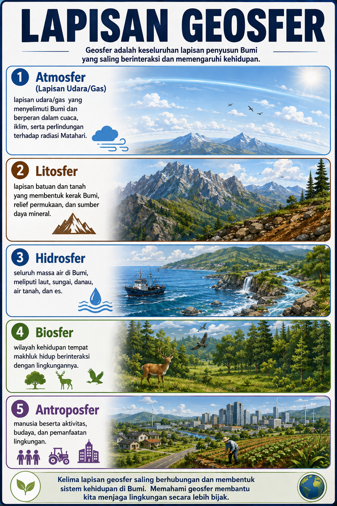
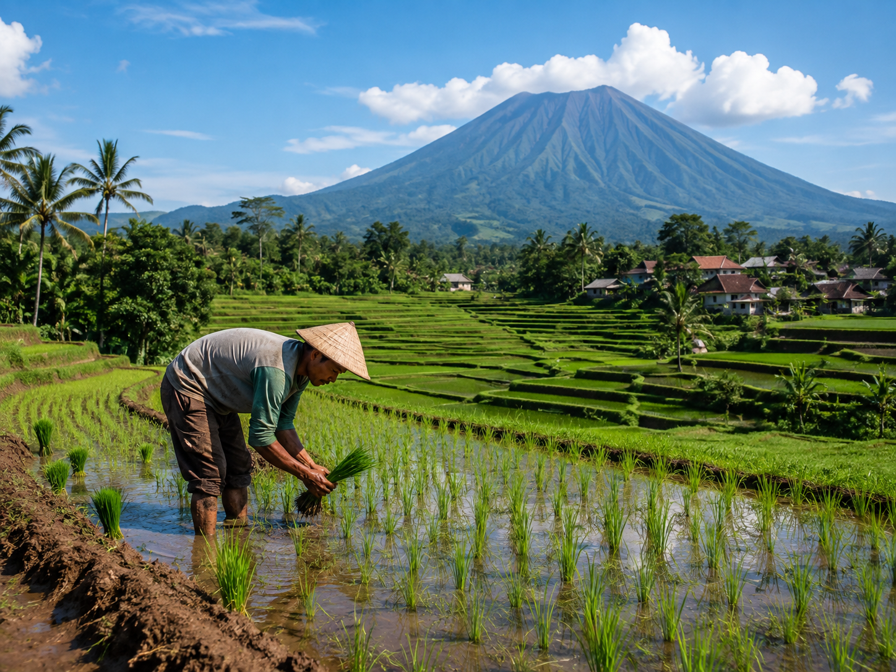
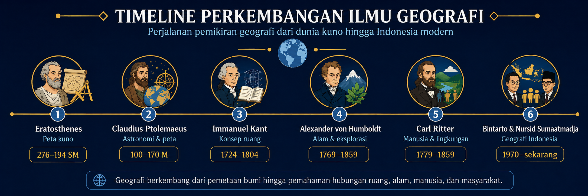

PENGETAHUAN DASAR
GEOGRAFI
Pengertian, objek, prinsip, aspek, pendekatan, dan manfaat geografi
dalam kehidupan sehari-hari
Capaian & Alur Tujuan Pembelajaran Kurikulum Merdeka Fase E
Rasional Mata Pelajaran Geografi
Mata pelajaran Geografi membekali peserta didik dengan pengetahuan, keterampilan, dan sikap untuk memahami dan menganalisis fenomena geosfer serta interaksi antara manusia dan lingkungannya. Pembelajaran Geografi mendorong peserta didik untuk berpikir secara keruangan, kelingkungan, dan kewilayahan dalam menghadapi berbagai tantangan global, seperti perubahan iklim, bencana alam, dan pembangunan berkelanjutan.
Karakteristik Mata Pelajaran Geografi
Geografi memiliki karakteristik sebagai ilmu yang mengkaji persamaan dan perbedaan fenomena geosfer (fisik dan sosial) dengan sudut pandang kelingkungan, kewilayahan, dan keruangan. Ilmu ini bersifat interdisipliner, menghubungkan ilmu alam dan ilmu sosial, serta berorientasi pada pemecahan masalah nyata di masyarakat.
Capaian Pembelajaran (CP) – Fase E
Pada akhir Fase E, peserta didik memahami konsep dasar Geografi, peta, pengindraan jauh, Sistem Informasi Geografis (SIG), penelitian Geografi, dan fenomena geosfer fisik yaitu litosfer, atmosfer, dan hidrosfer sebagai ruang kehidupan.
Dimensi Profil Lulusan (DPL)
Penalaran Kritis
Menganalisis informasi geografis secara objektif dan membuat kesimpulan rasional.
Komunikasi
Menyajikan hasil analisis fenomena geografis secara lisan maupun tertulis dengan istilah yang tepat.
Kolaborasi
Bekerja sama dalam kelompok untuk mengidentifikasi dan memecahkan masalah geografis di lingkungan sekitar.
Kreativitas
Menghasilkan ide atau produk (peta konsep, infografis) untuk menyajikan pemahaman tentang fenomena geografis.
Kemandirian
Mencari dan mengolah informasi geografis dari berbagai sumber secara bertanggung jawab.
Kewargaan
Menunjukkan sikap menghargai lingkungan dan memahami peran manusia dalam menjaga kelestarian bumi.
Indikator Pencapaian Tujuan Pembelajaran
Indikator 1
Menganalisis pengertian dan ruang lingkup geografi sebagai ilmu yang mengkaji fenomena geosfer.
Indikator 2
Mengidentifikasi objek material dan objek formal dalam studi geografi.
Indikator 3
Menerapkan prinsip-prinsip geografi (distribusi, interelasi, deskripsi, korologi) untuk menganalisis fenomena di lingkungan sekitar.
Indikator 4
Mengevaluasi manfaat mempelajari geografi dalam kehidupan sehari-hari dan pembangunan berkelanjutan.
Kerangka Pembelajaran Mendalam Pendekatan Deep Learning
Pengertian Geografi Etimologis & Filosofis
Kata "geografi" berasal dari bahasa Yunani: geo (bumi) dan graphien (menulis/melukis). Jadi secara harfiah, geografi berarti "lukisan bumi". Namun, seiring perkembangan ilmu pengetahuan, pengertian geografi menjadi lebih luas dan mendalam.
Geografi pada hakikatnya adalah ilmu yang mempelajari persamaan dan perbedaan fenomena geosfer (lapisan bumi) dengan sudut pandang kelingkungan dan kewilayahan. Artinya, geografi tidak hanya melihat bumi secara fisik, tetapi juga melihat bagaimana manusia berinteraksi dengan lingkungan dan bagaimana fenomena tersebut tersebar di permukaan bumi.
- Fenomena Geosfer: Meliputi litosfer (batuan), atmosfer (udara), hidrosfer (air), biosfer (kehidupan), dan antroposfer (manusia).
- Sudut Pandang Kelingkungan: Melihat hubungan timbal balik antara makhluk hidup dengan lingkungannya.
- Sudut Pandang Kewilayahan: Melihat karakteristik unik suatu wilayah dibandingkan wilayah lain.

(Arahkan kursor untuk pratinjau, klik untuk melihat ukuran penuh)
"Geografi adalah jembatan antara ilmu alam dan ilmu sosial."
Ruang Lingkup Geografi

(Arahkan kursor untuk pratinjau, klik untuk melihat ukuran penuh)
Geografi Fisik
Mengkaji fenomena alam di permukaan bumi, seperti:
- Litosfer: Bentuk lahan, gunung, tanah, gempa bumi
- Atmosfer: Iklim, cuaca, angin, hujan
- Hidrosfer: Laut, sungai, danau, siklus air
- Biosfer: Flora, fauna, ekosistem
Geografi Sosial (Manusia)
Mengkaji aktivitas manusia dan interaksinya dengan lingkungan, seperti:
- Kependudukan: Jumlah, persebaran, migrasi
- Ekonomi: Pertanian, industri, perdagangan
- Sosial Budaya: Tradisi, bahasa, agama
- Politik: Wilayah, batas negara, tata kota
Ingin tahu definisi geografi dari para ahli secara lebih lengkap? Kunjungi Halaman 6 – Definisi Menurut Para Ahli untuk penjelasan interaktif dari Eratosthenes, Ptolemaeus, Kant, Humboldt, Ritter, Bintarto, Sumaatmadja, dan Preston James.
Definisi Menurut Para Ahli Pendapat Tokoh Geografi Dunia

(Arahkan kursor untuk pratinjau, klik untuk melihat ukuran penuh)
Berikut adalah definisi geografi dari berbagai ahli terkemuka dunia. Klik pada kartu untuk melihat penjelasan lengkapnya.
Eratosthenes
Ilmuwan Yunani (276–194 SM)Dijuluki "Bapak Geografi":
- Geografi adalah ilmu yang melukiskan keadaan permukaan bumi dan segala sesuatu yang ada di atasnya.
- Orang pertama yang menggunakan istilah "geographia" (lukisan bumi).
- Berhasil menghitung keliling bumi dengan akurasi tinggi (± 40.000 km) menggunakan bayangan matahari.
Claudius Ptolemaeus
Astronom & Geografi Yunani (100–170 M)Penulis Geographia:
- Geografi adalah penyajian informasi tentang seluruh bagian bumi yang diketahui melalui peta dan data geografis.
- Mengembangkan sistem koordinat lintang dan bujur yang masih digunakan hingga kini.
- Karyanya menjadi rujukan utama geografi dan kartografi selama lebih dari 1.400 tahun.
Immanuel Kant
Filsuf Jerman (1724–1804)Pandangan tentang geografi:
- Geografi adalah ilmu yang mengkaji hubungan antara fenomena alam dengan manusia dalam ruang.
- Membagi geografi menjadi geografi fisik (alam) dan geografi manusia (sosial).
- Geografi adalah ilmu yang sistematis dan memberikan pemahaman tentang keragaman permukaan bumi.
Alexander von Humboldt
Ilmuwan Jerman (1769–1859)Pelopor Geografi Modern:
- Geografi adalah ilmu tentang hubungan timbal balik antara manusia dan lingkungan alam.
- Menekankan pentingnya pengamatan langsung dan ekspedisi lapangan dalam penelitian geografi.
- Mengembangkan konsep zonasi iklim dan vegetasi berdasarkan ketinggian dan lintang.
Carl Ritter
Ahli Geografi Jerman (1779–1859)Pendiri Geografi Modern:
- Geografi adalah ilmu tentang hubungan antara alam dan sejarah manusia.
- Menekankan bahwa geografi harus mempelajari wilayah secara holistik (keseluruhan).
- Geografi adalah jembatan antara ilmu alam dan ilmu sosial.
Bintarto
Ahli Geografi IndonesiaDefinisi geografi:
- Geografi adalah ilmu yang mempelajari persamaan dan perbedaan fenomena geosfer dengan sudut pandang kelingkungan dan kewilayahan dalam konteks keruangan.
- Menekankan pada pendekatan regional dan ekologis.
Nursid Sumaatmadja
Ahli Geografi IndonesiaDefinisi geografi:
- Geografi adalah ilmu yang mempelajari gejala dan fenomena alam serta kehidupan di muka bumi dengan menggunakan pendekatan keruangan, kelingkungan, dan kompleks wilayah.
- Menekankan pada interaksi manusia dengan lingkungan sebagai inti kajian geografi.
Preston James
Ahli Geografi Amerika SerikatDefinisi geografi:
- Geografi adalah ilmu yang mempelajari hubungan timbal balik antara manusia dan lingkungannya serta persebaran fenomena di permukaan bumi.
- Menekankan pada perspektif keruangan dan interaksi manusia-lingkungan.
Kesimpulan: Dari berbagai definisi di atas, dapat disimpulkan bahwa geografi memiliki beberapa dimensi penting:
- Dimensi Deskriptif: Geografi melukiskan keadaan permukaan bumi (Eratosthenes, Ptolemaeus).
- Dimensi Hubungan Alam-Manusia: Geografi mengkaji interaksi manusia dengan lingkungan (Humboldt, Ritter, Preston James).
- Dimensi Keruangan: Geografi melihat fenomena dalam konteks ruang dan wilayah (Kant, Bintarto, Sumaatmadja).
- Dimensi Sistematis: Geografi adalah ilmu yang terstruktur dan metodis (Kant, Ritter).
"Geography is the bridge between the natural and social sciences." — Geografi adalah jembatan antara ilmu alam dan ilmu sosial.
Objek Studi & Prinsip Geografi Materi dan Formal
Objek Studi Geografi
Objek Material
Objek material geografi adalah seluruh fenomena atau gejala yang ada di permukaan bumi (geosfer), meliputi:
- Litosfer: Batuan, tanah, gunung, bentuk lahan
- Atmosfer: Cuaca, iklim, udara, angin
- Hidrosfer: Laut, sungai, danau, air tanah
- Biosfer: Flora, fauna, ekosistem
- Antroposfer: Manusia dan aktivitasnya
Objek Formal
Objek formal geografi adalah cara pandang atau pendekatan yang digunakan untuk mengkaji objek material. Meliputi:
- Pendekatan Keruangan: Melihat persebaran dan pola
- Pendekatan Kelingkungan: Melihat interaksi manusia-lingkungan
- Pendekatan Kompleks Wilayah: Melihat perpaduan aspek fisik dan sosial
Prinsip Geografi
Ada empat prinsip geografi yang menjadi landasan dalam mengkaji fenomena geosfer. Keempat prinsip ini saling terkait dan digunakan secara bersama-sama. Klik pada setiap kartu untuk melihat penjelasan, contoh, dan gambar ilustrasinya.
1. Prinsip Distribusi (Penyebaran)
Fenomena geosfer tersebar tidak merata di permukaan bumi.
Prinsip distribusi menekankan bahwa fenomena geosfer tersebar secara tidak merata di permukaan bumi. Tugas geografi adalah mendeskripsikan, memetakan, dan menjelaskan pola persebaran tersebut.
Contoh: Persebaran gunung berapi di Indonesia (ring of fire), persebaran penduduk yang padat di pulau Jawa, persebaran hutan hujan tropis di Kalimantan.
(Arahkan kursor untuk pratinjau, klik untuk ukuran penuh)
2. Prinsip Interelasi (Hubungan)
Fenomena geosfer saling berhubungan dan memengaruhi satu sama lain.
Prinsip interelasi menekankan bahwa fenomena geosfer saling berhubungan dan memengaruhi satu sama lain. Tidak ada fenomena yang berdiri sendiri; semuanya terhubung dalam sistem yang kompleks.
Contoh: Hubungan antara curah hujan tinggi dengan jenis vegetasi hutan hujan; hubungan antara kepadatan penduduk dengan kebutuhan lahan pemukiman; hubungan antara aktivitas gunung berapi dengan kesuburan tanah.
(Arahkan kursor untuk pratinjau, klik untuk ukuran penuh)
3. Prinsip Deskripsi
Fenomena geosfer digambarkan dan dijelaskan secara terperinci.
Prinsip deskripsi menekankan bahwa fenomena geosfer harus digambarkan dan dijelaskan secara terperinci melalui kata-kata, peta, grafik, atau tabel. Deskripsi yang baik menjadi dasar untuk analisis lebih lanjut.
Contoh: Deskripsi tentang karakteristik fisik Danau Toba, deskripsi tentang kondisi sosial ekonomi penduduk di suatu desa, deskripsi tentang jenis tanah di suatu daerah.
(Arahkan kursor untuk pratinjau, klik untuk ukuran penuh)
4. Prinsip Korologi
Gabungan dari distribusi, interelasi, dan deskripsi dalam satu wilayah.
Prinsip korologi adalah gabungan dari tiga prinsip sebelumnya (distribusi, interelasi, dan deskripsi) dalam konteks suatu wilayah. Prinsip ini menekankan bahwa suatu wilayah memiliki karakteristik unik yang merupakan hasil dari interaksi berbagai fenomena.
Contoh: Analisis wilayah Jakarta sebagai daerah perkotaan dengan karakteristik kepadatan penduduk tinggi, aktivitas ekonomi beragam, dan masalah banjir yang kompleks. Wilayah ini dipahami melalui persebaran (distribusi), hubungan antarfenomena (interelasi), dan deskripsi terperinci.
(Arahkan kursor untuk pratinjau, klik untuk ukuran penuh)
10 Konsep Esensial Geografi
Selain prinsip, geografi juga memiliki sepuluh konsep esensial yang menjadi landasan berpikir dalam menganalisis fenomena geosfer. Konsep-konsep ini saling terkait dan membantu kita memahami dunia secara lebih terstruktur.
1. Lokasi
Letak suatu tempat di permukaan bumi, baik absolut (lintang/bujur) maupun relatif (berdasarkan tempat lain).
2. Jarak
Rentang atau panjang antara dua titik, bisa diukur secara fisik (kilometer) atau waktu tempuh.
3. Keterjangkauan
Kemudahan akses atau konektivitas antar wilayah, dipengaruhi oleh sarana transportasi dan komunikasi.
4. Pola
Bentuk, susunan, atau persebaran fenomena di permukaan bumi (misalnya pola pemukiman, pola aliran sungai).
5. Morfologi
Bentuk permukaan bumi dan reliefnya, seperti gunung, lembah, dataran, atau pantai.
6. Aglomerasi
Kecenderungan fenomena mengelompok di suatu wilayah, misalnya pemusatan industri atau permukiman.
7. Nilai Kegunaan
Manfaat atau potensi suatu wilayah bagi kehidupan manusia, misalnya lahan pertanian, sumber air, atau pariwisata.
8. Interaksi & Interdependensi
Hubungan timbal balik dan saling ketergantungan antar wilayah (misalnya perdagangan, migrasi, atau aliran informasi).
9. Perbedaan Regional
Variasi karakteristik antar satu wilayah dengan wilayah lain, baik fisik maupun sosial-budaya.
10. Keterkaitan Keruangan
Hubungan antar fenomena dalam ruang, di mana perubahan di satu tempat dapat memengaruhi tempat lain.
Penerapan: Saat mengamati sebuah fenomena, cobalah tanyakan: di mana lokasinya? bagaimana polanya? apa hubungannya dengan wilayah lain? Dengan sepuluh konsep ini, analisis geografis menjadi lebih tajam dan menyeluruh.
Ingat: Keempat prinsip geografi ini digunakan secara terpadu untuk memahami fenomena geosfer. Seorang ahli geografi tidak hanya melihat persebaran (distribusi), tetapi juga hubungan antarfenomena (interelasi), mendeskripsikannya secara detail (deskripsi), dan melihatnya dalam konteks wilayah (korologi).
Aspek & Pendekatan Geografi Memahami Fenomena Secara Utuh
Aspek Geografi
Aspek geografi adalah sudut pandang atau sisi kajian yang digunakan untuk menganalisis fenomena geosfer. Terdapat dua aspek utama.
Aspek Fisik
Mengkaji fenomena alam yang terjadi di permukaan bumi, meliputi:
- Topografi: Bentuk permukaan bumi (gunung, lembah, dataran)
- Klimatologi: Iklim dan cuaca
- Hidrologi: Siklus air, sungai, danau, laut
- Pedologi: Tanah dan karakteristiknya
- Biogeografi: Persebaran flora dan fauna
Aspek Nonfisik (Sosial)
Mengkaji aktivitas dan interaksi manusia dengan lingkungan, meliputi:
- Demografi: Kependudukan (jumlah, persebaran, komposisi)
- Ekonomi: Aktivitas produksi, distribusi, konsumsi
- Sosial Budaya: Tradisi, bahasa, agama, adat istiadat
- Politik: Wilayah, batas negara, tata pemerintahan
- Permukiman: Pola dan jenis pemukiman
Pendekatan Geografi
Pendekatan geografi adalah cara atau metode yang digunakan untuk menganalisis fenomena geosfer. Ada tiga pendekatan utama. Klik pada setiap kartu untuk melihat penjelasan dan contohnya.

(Arahkan kursor untuk pratinjau, klik untuk melihat ukuran penuh)
Pendekatan Keruangan
Menganalisis persebaran dan pola fenomena di permukaan bumi.
Pendekatan keruangan (spatial approach) melihat fenomena geosfer berdasarkan persebaran dan pola di permukaan bumi. Fokusnya adalah di mana suatu fenomena terjadi dan bagaimana pola persebarannya.
Contoh: Menganalisis persebaran pusat perbelanjaan di suatu kota, memetakan persebaran kasus COVID-19, atau melihat pola persebaran industri di suatu wilayah.Pendekatan Kelingkungan
Menganalisis hubungan timbal balik manusia dengan lingkungan.
Pendekatan kelingkungan (ecological approach) melihat interaksi dan hubungan timbal balik antara manusia dengan lingkungannya. Fokusnya adalah bagaimana manusia memengaruhi lingkungan dan bagaimana lingkungan memengaruhi manusia.
Contoh: Menganalisis dampak deforestasi terhadap bencana banjir, mengkaji adaptasi masyarakat pesisir terhadap abrasi, atau meneliti pengaruh perubahan iklim terhadap pola tanam petani.Pendekatan Kompleks Wilayah
Menganalisis perpaduan aspek fisik dan sosial dalam suatu wilayah.
Pendekatan kompleks wilayah (regional complex approach) melihat suatu wilayah secara holistik dengan memadukan aspek fisik dan sosial. Fokusnya adalah karakteristik unik suatu wilayah yang terbentuk dari interaksi berbagai fenomena.
Contoh: Menganalisis karakteristik wilayah pesisir (aspek fisik: pantai, ombak, tanah; aspek sosial: nelayan, pariwisata, pemukiman), atau mengkaji perkembangan wilayah perkotaan (aspek fisik: topografi, drainase; aspek sosial: kepadatan penduduk, aktivitas ekonomi).Penerapan: Dalam praktiknya, ketiga pendekatan ini digunakan secara terpadu. Misalnya, untuk memahami masalah banjir di Jakarta, seorang geografi menggunakan pendekatan keruangan (peta daerah banjir), pendekatan kelingkungan (hubungan curah hujan, sungai, dan tutupan lahan), serta pendekatan kompleks wilayah (karakteristik Jakarta sebagai wilayah perkotaan).
Keterampilan & Manfaat Geografi Life Skills & Pembangunan Berkelanjutan
Keterampilan Dasar Geografi
Observasi
Kemampuan mengamati fenomena geosfer secara langsung di lapangan. Meliputi pengamatan terhadap bentuk lahan, vegetasi, aktivitas manusia, dan perubahan lingkungan.
Interpretasi Peta
Kemampuan membaca, memahami, dan menganalisis informasi yang disajikan dalam peta. Meliputi skala, simbol, legenda, dan koordinat.
Analisis Data
Kemampuan mengolah dan menafsirkan data geografis (tabel, grafik, diagram) untuk menarik kesimpulan dan memprediksi kecenderungan.
Aktivitas: Observasi Sederhana di Sekitarmu
Ayo kita praktikkan ilmu geografi dengan mengamati lingkungan sekitar! Ikuti langkah-langkah mudah berikut:
- Pilih satu objek di sekitarmu, misalnya: lokasi penambangan emas tradisional, lahan gambut, kebun sawit, sungai, atau perkampungan.
- Amati dan catat hal-hal yang kamu lihat: warna, bentuk, ukuran, suasana, aktivitas manusia, dan kondisi alam di sekitarnya.
- Tuliskan hasil pengamatanmu dalam bentuk catatan bebas atau tabel sederhana seperti contoh di bawah.
- Ceritakan kembali hasil observasimu kepada teman atau guru, dan diskusikan apa yang bisa kamu pelajari dari fenomena tersebut.
Contoh Catatan Observasi: Penambangan Emas Tradisional di Katingan
- Area tambang berupa lubang-lubang galian di tepi sungai dengan timbunan tanah dan kerikil bekas galian. Luas area sekitar 0,5 hektar.
- Air sungai di sekitar lokasi tampak keruh kecokelatan karena tercampur lumpur hasil cucian tanah.
- Terlihat beberapa peralatan sederhana seperti dulang (piringan logam), dompeng (pompa air berbahan bakar diesel), dan pipa-pipa paralon untuk menyemprotkan air ke tanah.
- Vegetasi: Pohon-pohon di sekitar area tambang sudah banyak yang ditebang. Tumbuhan yang tersisa hanya semak belukar dan rumput liar. Beberapa lahan terlihat gundul dan tandus.
- Kegiatan manusia: Sekitar 10–15 orang penambang terlihat bekerja dalam kelompok. Ada yang menggali tanah menggunakan cangkul, ada yang menyemprotkan air ke tumpukan tanah menggunakan dompeng, dan ada yang mendulang hasil cucian di sungai untuk mencari butiran emas. Beberapa penambang terlihat menggunakan air raksa (merkuri) untuk menggumpalkan emas halus.
- Satwa: Hampir tidak terlihat satwa liar di sekitar lokasi karena suara mesin dompeng yang bising dan air sungai yang keruh. Beberapa ekor burung hanya terlihat terbang di kejauhan.
- Bau dan suasana: Bau tanah basah dan bau solar dari mesin dompeng. Suasana ramai dengan suara mesin dan percakapan penambang.
- Penambangan ini menjadi sumber mata pencaharian bagi banyak warga, meskipun berisiko.
- Mengapa air sungai menjadi keruh? (Akibat sedimentasi atau terbawanya lumpur dari hasil galian dan pencucian tanah).
- Apa dampak penggunaan air raksa (merkuri)? (Merkuri sangat beracun dan dapat mencemari air, membahayakan kesehatan penambang, dan membunuh biota air seperti ikan).
- Apa yang terjadi jika penambangan terus berlangsung tanpa aturan? (Kerusakan lingkungan, erosi tepi sungai, dan hilangnya habitat hewan).
- Apakah ada solusi agar penambangan tetap berjalan tanpa merusak lingkungan? (Misalnya menggunakan metode yang lebih ramah lingkungan tanpa merkuri, dan melakukan reklamasi lahan bekas tambang).
Refleksi dari pengamatan ini:
Aktivitas penambangan emas tradisional menunjukkan hubungan yang kompleks antara manusia dan lingkungan. Di satu sisi, ia memberikan penghidupan ekonomi, tetapi di sisi lain ia merusak ekosistem sungai dan mengancam kesehatan. Ini adalah contoh nyata dari prinsip interelasi (hubungan timbal balik antara manusia dan alam) dan prinsip korologi (dampak kegiatan ini terhadap wilayah secara keseluruhan). Sebagai generasi muda, kita perlu memikirkan cara-cara yang lebih berkelanjutan dalam memanfaatkan sumber daya alam.
Kamu bisa menulis seperti contoh di atas, atau membuat tabel sederhana dengan kolom: Objek, Lokasi, Deskripsi Fisik, Aktivitas Manusia, Kesan & Pertanyaan.
Format Tabel Observasi yang Bisa Kamu Gunakan
| No | Aspek Pengamatan | Hasil Pengamatan (Contoh) |
|---|---|---|
| 1 | Nama objek | Tambang emas tradisional |
| 2 | Lokasi | 1,5 km dari sekolah, bantaran sungai desa Hampalit |
| 3 | Deskripsi fisik (bentuk lahan, warna air) | Lubang galian, tanah gundul, air sungai keruh kecokelatan |
| 4 | Vegetasi di sekitar | Pohon ditebang, tersisa semak dan rumput liar |
| 5 | Aktivitas manusia & peralatan | Menggali, menyemprot air, mendulang; pakai dompeng dan merkuri |
| 6 | Kondisi lingkungan & suasana | Bising, bau solar, air tercemar, jarang satwa liar |
| 7 | Pertanyaan/Refleksi | Dampak merkuri? Solusi ramah lingkungan? Hubungan ekonomi vs lingkungan? |
Gunakan tabel di atas sebagai panduan saat melakukan observasi. Isi kolom "Hasil Pengamatan" dengan temuanmu sendiri!
Refleksi: Setelah selesai, coba pikirkan: bagaimana objek yang kamu amati berhubungan dengan lingkungan sekitarnya? Apakah ada pengaruh timbal balik antara manusia dan alam di tempat itu? Kaitkan dengan prinsip-prinsip geografi (distribusi, interelasi, deskripsi, korologi) yang sudah kamu pelajari!
Manfaat Mempelajari Geografi
Memahami Lingkungan
Membantu kita memahami kondisi alam dan lingkungan sekitar.
Geografi memberikan pengetahuan tentang kondisi alam, iklim, tanah, dan sumber daya yang ada di sekitar kita. Pemahaman ini penting untuk menjaga kelestarian lingkungan.
Contoh: Mengetahui jenis tanah dan kandungan mineral di daerah kita, memahami dampak penambangan terhadap kualitas air sungai, atau mengenali daerah rawan banjir dan longsor untuk mitigasi.Memahami Masyarakat
Membantu kita memahami kehidupan sosial dan budaya masyarakat.
Geografi sosial mengkaji persebaran penduduk, aktivitas ekonomi, dan budaya yang membentuk karakteristik suatu wilayah. Ini membantu kita memahami keragaman dan dinamika masyarakat.
Contoh: Memahami mengapa banyak warga memilih bekerja sebagai penambang tradisional, menganalisis dampak sosial dari aktivitas tambang terhadap komunitas, atau memahami pola migrasi penduduk akibat perubahan ekonomi.Mitigasi Bencana
Membantu kita mengenali dan mengurangi risiko bencana alam.
Geografi fisik mempelajari fenomena alam seperti gempa bumi, gunung berapi, banjir, dan tanah longsor. Pengetahuan ini sangat penting untuk mitigasi bencana dan perencanaan wilayah yang aman.
Contoh: Pemetaan daerah rawan banjir dan longsor akibat kerusakan hutan, analisis daerah aliran sungai yang tercemar limbah tambang, atau identifikasi zona rawan kebakaran hutan dan lahan.Pembangunan Berkelanjutan
Membantu kita merencanakan pembangunan yang ramah lingkungan.
Geografi memberikan landasan ilmiah untuk perencanaan tata ruang, pengelolaan sumber daya alam, dan pembangunan infrastruktur yang berkelanjutan dengan memperhatikan daya dukung lingkungan.
Contoh: Perencanaan tata ruang wilayah pertambangan yang ramah lingkungan, pengelolaan lahan bekas tambang (reklamasi), atau pengembangan ekonomi alternatif bagi masyarakat yang bergantung pada tambang tradisional."Geografi bukan hanya tentang peta dan nama tempat. Geografi adalah tentang memahami dunia kita — bagaimana kita hidup di atasnya, bagaimana kita memengaruhinya, dan bagaimana kita dapat menjaga kelestariannya untuk generasi mendatang."
Asesmen Pembelajaran Evaluasi Pemahaman Pengetahuan Dasar Geografi
Setelah mempelajari materi pengertian, objek, prinsip, aspek, pendekatan, dan manfaat geografi, kerjakan asesmen berikut untuk mengukur pemahamanmu. Selamat mengerjakan!
A Pilihan Ganda
Pilihlah satu jawaban yang paling tepat!
B Analisis & Refleksi
Jawablah pertanyaan berikut dengan uraian yang jelas dan sistematis!
Catatan: Kerjakan dengan jujur dan mandiri. Gunakan pemahamanmu dari seluruh materi yang telah dipelajari. Selamat berlatih!
Refleksi Pembelajaran Menyimpulkan Materi
🌟 Apa yang Kamu Dapatkan Hari Ini?
- ✅Memahami pengertian geografi dan hakikatnya.
- ✅Mengenal objek studi, prinsip, aspek, dan pendekatan geografi.
- ✅Menyadari bahwa geografi membantu memahami lingkungan dan kehidupan.
Renungkan
"Menurutmu, mengapa geografi penting dipelajari oleh generasi muda di era perubahan iklim dan urbanisasi?"
Coba tuliskan jawabanmu di buku catatan sebagai bentuk refleksi pribadi.
"Geografi bukan hanya tentang peta. Geografi adalah tentang memahami dunia kita dan bagaimana kita menjaganya."
🎉 Selamat!
Kamu telah menyelesaikan materi Pengetahuan Dasar Geografi.
Siapkan dirimu untuk bab selanjutnya!
Referensi Daftar Pustaka
- Kurikulum Merdeka: Capaian Pembelajaran Mata Pelajaran IPS Fase E-Fase F, BSKAP Kemendikbudristek (2024).
- Bintarto. Metode Penelitian Geografi. Yogyakarta: UGM Press.
- Sumaatmadja, Nursid. Metodologi Pengajaran Geografi. Jakarta: Bumi Aksara.
- Haggett, Peter. Geography: A Modern Synthesis. New York: Harper & Row.
- de Blij, H.J. & Muller, P.O. Geography: Realms, Regions and Concepts. New York: Wiley.
- Muta'ali, Luthfi. (2015). Geografi Pemukiman. Yogyakarta: Badan Penerbit Fakultas Geografi UGM.
- Suharyono & Amien, M. (2013). Pengantar Filsafat Geografi. Yogyakarta: Ombak.
- Daldjoeni, N. (2005). Geografi untuk Indonesia. Bandung: Alumni.
- Rais, J. & Asfar, M. (2012). Peta dan Pemetaan. Jakarta: Pradnya Paramita.
- I Made Sandy. (2004). Republik Indonesia: Geografi Regional. Jakarta: UI Press.
- Sartono Kartodirdjo. (1992). Pendekatan Ilmu Sosial dalam Metodologi Sejarah. Jakarta: Gramedia.